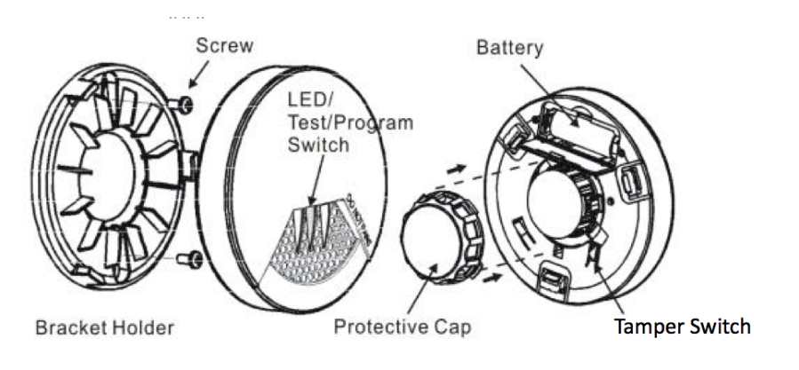

VIS_ZS6101
Firmware Version : 3.5 |
 |
Quick StartS This device is a wireless Z-Wave sensor. Exclusion, Inclusion and wakeup are confirmed by hitting the programm button. Please refer to the chapters below for detailed information about all aspects of the products usage. |
Product description
This Smoke Detector uses a non-radioactive photoelectron-sensor for a reliable and safe detection of smoke. The smoke sensitivity is 0.5 % /ft … 4 % /ft. The smoke detector has a test button and a flashing LED, so you always know that the smoke alarm is working correctly. The smoke alarm will warn you when the battery is low. When the device detects smoke, it will give a loud warning sound. It will also trigger actions in other Z-Wave devices or Z-Wave controllers to escalate the alarm. The Smoke Detector can also activate an alarm-scenario within the Z-Wave network. For example you can create an alarm-scenario to switch on all lights in the house when smoke is detected. Even at the middle of the night, you may leave the house very quickly when smoke is detected.
Installation Guidelines

- Remove the bracket from the detector by rotating it counter-clockwise.
- Place the bracket where you are going to install the detector. In each of keyhole slots, draw a mark to locate plastic anchor and screw. Using a 3/16-inch (5mm) drill bit, drills two holes at the marks and insert plastic anchor, and attached the bracket by using the screws.
- Open the battery cover to insert the batteries, and then replace the cover. Fix the detector with bracket by rotating it clockwise.
Please follow the recommendations about amount as position of the sensor in your home as given above. Avoid to place the sensor into the angle of walls, prefer positions in the middle of the room.
Behavior within the Z-Wave network
I On factory default the device does not belong to any Z-Wave network. The device needs to join an existing wireless network to communicate with the devices of this network. This process is called Inclusion. Devices can also leave a network. This process is called Exclusion. Both processes are initiated by the primary controller of the Z-Wave network. This controller will be turned into exclusion respective inclusion mode. Please refer to your primary controllers manual on how to turn your controller into inclusion or exclusion mode. Only if the primary controller is in inclusion or exclusion mode, this device can join or leave the network. Leaving the network - i.e. being excluded - sets the device back to factory default.
If the device already belongs to a network, follow the exclusion process before including it in your network. Otherwise inclusion of this device will fail. If the controller being included was a primary controller, it has to be reset first.
Exclusion and Inclusion is confirmed by hitting the programm button.
Operating the device
- Power-on Mode: 1) Install the battery into the module 2) Close the bracket 3) the detector will take 8 to 12 sec. and emit a beep to confirm and start the burglar system. The detector will alarm once remove the bracket.
- Stand-by Mode: The red LED flashes one time every 11 seconds.
- Alarm Mode (It is the status when the alarm is triggered.): If a certain density of smoke is detected, an audible alarm with 3 beeps, break and 3 beeps will occure. The red LED will flash continuously and rapidly. Meanwhile, the smoke detector will send an alarm report (type: smoke alarm, state: alarm) to the user’s controller and also the detector will send an alarm report (type: smoke alarm, state: No alarm).
- Error Mode: If the smoke detector beeps and yellow LED flashes three times, it indicates the smoke detector is not working properly. Please require to repair or service.
- Low battery warning Mode: The yellow LED will flash once every 43 seconds with a short “beep” sound.
- Testing Mode: Test the alarm weekly by pushing the test switch for about 3 sec. until there are 3 beeps and red LED light on continuously. Then, the smoke detector will send an alarm report (type: smoke alarm, state: alarm) to the user’s controller and also the dectecor will send an alarm report (type: smoke alarm, state: No alarm). Please note if the detector only beep once and red LED flashes three times, it indicates the detector is not working properly. Please require to repair or service.
- Battery Power indicator: The detector will report the current status of battery capacity to the user’s controller.
- Self-Protection Mode: If the detector is removed from bracket, the detector will send an alarm (type:smoke alarm, level:0xFF) to the Z-Wave Interface Controller, and the yellow LED will flash continuously and the detector will sound.
- Silence Mode: The user could press the test switch to get into silence mode to turn off the alarm temporarily. The silence function will automatically turn into normal operation after 10 minutes if the smoke concentration around the detector is still at alarming level.
Wakeup Intervals - how to communicate with the device?
W This device is battery operated and turned into deep sleep state most of the time to save battery life time. Communication with the device is limited. In order to communicate with the device, a static controller C is needed in the network. This controller will maintain a mailbox for the battery operated devices and store commands that can not be received during deep sleep state. Without such a controller, communication may become impossible and/or the battery life time is significantly decreased.
This device will wakeup regularly and announce the wakeup state by sending out a so called Wakeup Notification. The controller can then empty the mailbox. Therefore, the device needs to be configured with the desired wakeup interval and the node ID of the controller. If the device was included by a static controller this controller will usually perform all necessary configurations. The wakeup interval is a tradeoff between maximal battery life time and the desired responses of the device.
Hitting the programm button will wake up the device.
It is possible to set the node ID to 255 to send wakeup notifications as broadcast. In this mode device takes more time to go to sleep and drains battery faster, but can notify all it's direct neighbors about a wakeup.
Node Information Frame
NI The Node Information Frame is the business card of a Z-Wave device. It contains information about the device type and the technical capabilities. The inclusion and exclusion of the device is confirmed by sending out a Node Information Frame. Beside this it may be needed for certain network operations to send out a Node Information Frame.
Hitting the programm button will send out an Node Information Frame.
Associations
A Z-Wave devices control other Z-Wave devices. The relationship between one device controlling another device is called association. In order to control a different device, the controlling device needs to maintain a list of devices that will receive controlling commands. These lists are called association groups and they are always related to certain events (e.g. button pressed, sensor triggers, ...). In case the event happens all devices stored in the respective association group will receive a common wireless command.
Association Groups:
| 1 | alarm messages (max. nodes in group: 5) |
Technical Data
| Battery Type | 3 * CR123A |
| Explorer Frame Support | Yes |
| SDK | 4.54 |
| Device Type | Slave with routing capabilities |
| Generic Device Class | Alarm Sensor |
| Specific Device Class | Routing Smoke Sensor |
| Routing | No |
| FLiRS | No |
| Firmware Version | 3.5 |